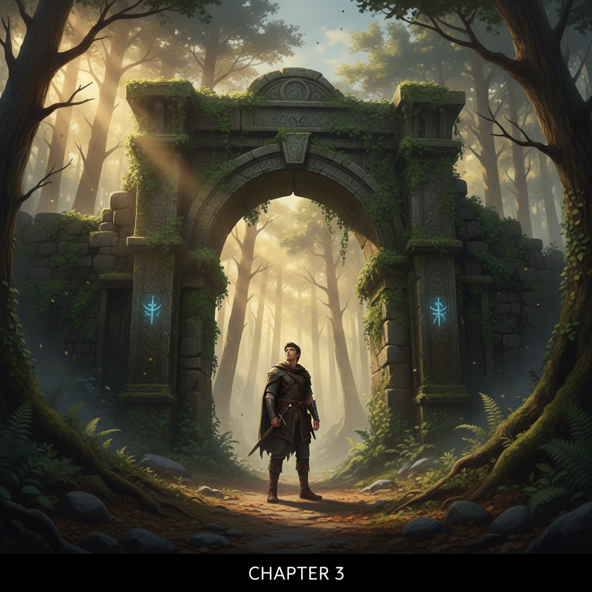

Capítulo 3: La Vigilancia
2026-02-21
Isabel y Eduardo se habían refugiado en el coche, las llantas crujían con cada giro del volante. El vehículo, un viejo modelo que siempre evitaban alquilizar, parecía ahora una prisión de luces rojas y azules en la distancia.
"¿Dónde crees que vayan?", preguntó Eduardo, mirando hacia adelante con ojos despiertos. Isabel no respondió inmediatamente, su mente viajaba a través de las posibilidades.
La casa, y todo lo relacionado con ella, parecía haberse convertido en un enigma insaciable. Los dos se habían quedado paralizados por el miedo y la intriga, incapaces de avanzar o retroceder sin consecuencias visibles.
"No es solo un coche", dijo Eduardo al fin, su voz cargada de tensión. "Es algo más." Isabel asintió, sintiendo cómo el frío se adentraba en su ser. El coche negro parecía una amenaza constante, sus luces inmóviles y fijas.
Isabel decidió que necesitaban más información si querían seguir adelante. "Miraré si hay cámaras de seguridad cercanas", dijo, sacando su teléfono del bolsillo trasero de los pantalones. Eduardo asintió, dándole la espalda mientras buscaba un lugar seguro para detenerse.
Detrás de ellos, el sonido constante de hojas y ramas rasgadas creaba una melodía temible. Se miraron por última vez antes de que Isabel se adentrara en el bosque cercano. El camino era estrecho y oscuramente iluminado solo por la luz del teléfono.
Mientras caminaba, Isabel escuchó voces susurrantes que parecían flotar en el aire nocturno. "No es seguro", murmuró entre dientes, pero la intriga era demasiada. Caminaba con firmeza hacia el centro del bosque, donde una pequeña lucecita roja se veía brillante.
Al llegar a un claro, pudo ver una pequeña cámara de seguridad instalada en un árbol. El dispositivo estaba desactivado, pero las imágenes grabadas estaban allí, esperando su descubrimiento. Isabel tomó fotos del lugar y guardó el teléfono en su bolsillo.
De regreso al coche, Eduardo la recibió con una mirada preocupada. "¿Qué viste?", preguntó, su voz temblorosa.
"Algo que nos llevará a lo que buscan", respondió Isabel, pasando una mano por su cabello sudado. "Pero tenemos que ser muy cautos." Eduardo asintió, comprendiendo la gravedad de la situación.
El coche se movía con dificultad en la carretera sinuosa que llevaba al pueblo. El silencio era casi sepulcral, rompido solo por el sonido del motor y los crujidos de las hojas bajo los neumáticos. Isabel se sentó tensa, su mente trabajando a toda velocidad para encontrar una solución.
El teléfono volvió a sonar en ese momento, interrumpiendo sus pensamientos. "No lo atiendas", dijo Eduardo antes de que ella pudiera moverse. Pero el sonido persistía. Isabel suspiró y tomó el teléfono con manos temblorosas.
El número desconocido se desplegó en la pantalla. "¿Quién será?", preguntó, mirando a Eduardo nerviosa.
Eduardo tosió suavemente y le dio un leve empujón. "Tal vez deberíamos", dijo en voz baja. Isabel respiró profundamente antes de desbloquear el teléfono.
En el mensaje se leía: "Han sido vistos". Sus ojos se abrieron en shock, la sensación de ser vigilados era cada vez más realista. Al mirar hacia atrás, vieron dos figuras oscuras entre los árboles.
"¡Corramos!" exclamó Eduardo, jalando a Isabel del brazo y corriendo hacia el coche. El corazón les latía con fuerza en sus pechos mientras trataban de ignorar la amenaza que se cernía sobre ellos. Aceleraron al máximo, intentando alejarse lo más posible.
La carretera se extendía frente a ellos en una penumbra inquietante, solo iluminada por los faros del coche y el débil resplandor de la luna. El viento soplaba con fuerza, agitando las hojas y creando un zumbido constante.
Isabel miró hacia adelante, sintiendo cómo una escalofriante sensación se apoderaba de ella. "Esto no es un juego", murmuró con voz ronca, tomando la mano de Eduardo en su propio temor. El coche rugía bajo ellos, empujado a sus límites por el miedo y la necesidad de escapar.
A medida que conducían hacia el pueblo, el silencio se apoderaba de su mente y sus sentidos, preparándolos para lo que vendría a continuación. Las sombras les rodeaban como una tela invisible, aguardando pacientemente la oportunidad de actuar.
### IMAGE_PROMPT Un coche negro parado en el borde del bosque, con figuras oscuras detrás. ### SUMMARY En este capítulo, Isabel y Eduardo descubren cámaras de seguridad y reciben un nuevo mensaje que los alerta de que son vistos. Su viaje hacia el pueblo se convierte en una carrera contra el tiempo mientras enfrentan la creciente amenaza a su alrededor.Mañana, nuevo capítulo.
Lo que dicen los lectores
Vuelvo cada día. Engancha de verdad.
El gancho del final me tiene enganchado.
Ya lo he recomendado. Muy bien escrito.